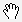

Legacy Document
Important: The information in this document is obsolete and should not be used for new development.
NSCursor
| Inherits from | |
| Implements | |
| Package | com.apple.cocoa.application |
| Companion guide |
Overview
Instances of the NSCursor class manage the appearance of the cursor.
The following table shows and describes the system cursors, and indicates the static method for obtaining them:
Cursor |
Description |
|---|---|
|
The arrow cursor ( |
The I-beam cursor for indicating insertion points ( |
|
|
The cross-hair cursor ( |
|
The closed-hand cursor ( |
 |
The open-hand cursor ( |
The pointing-hand cursor ( |
|
The resize-left cursor ( |
|
The resize-right cursor ( |
|
|
The resize-left-and-right cursor ( |
|
The resize-up cursor ( |
The resize-down cursor ( |
|
The resize-up-and-down cursor ( |
|
|
The disappearing item cursor ( |
In Mac OS X version 10.3 and later, cursor size is no longer limited to 16 by 16 pixels.
Tasks
Constructors
Setting Cursor Attributes
Controlling Which Cursor Is Current
-
popCursor
-
pop
-
push
-
set
-
mouseEntered -
setOnMouseEntered -
isSetOnMouseEntered -
mouseExited -
setOnMouseExited -
isSetOnMouseExited
Retrieving Cursor Instances
-
currentCursor
-
arrowCursor
-
closedHandCursor
-
crosshairCursor
-
disappearingItemCursor
-
IBeamCursor
-
openHandCursor
-
pointingHandCursor
-
resizeDownCursor -
resizeLeftCursor -
resizeLeftRightCursor
-
resizeRightCursor
-
resizeUpCursor
-
resizeUpDownCursor
Constructors
NSCursor
Creates a new cursor, assigning it a null image and a hot spot of NSPoint.ZeroPoint.
public NSCursor()
Creates a cursor, assigns it newImage, and sets its hot spot to aPoint.
public NSCursor(NSImage newImage, NSPoint aPoint)
Creates a new cursor, assigns it newImage, and sets its hot spot to aPoint.
public NSCursor(NSImage newImage, NSColor fg, NSColor bg, NSPoint aPoint)
Discussion
The foreground and background colors (fg and bg, respectively) are currently ignored.
Static Methods
arrowCursor
Returns the default cursor, a slanted arrow with its hot spot at the tip.
public static NSCursor arrowCursor()
Discussion
The arrow cursor is the one you’re used to seeing over buttons, scrollers, and many other objects in the window system.
See Also
closedHandCursor
Returns the closed-hand system cursor.
public static NSCursor closedHandCursor()
Availability
- Available in Mac OS X v10.3 and later.
crosshairCursor
Returns the cross-hair system cursor.
public static NSCursor crosshairCursor()
Discussion
This cursor is used for situations when precise location is required (where the lines cross is the hot spot).
Availability
- Available in Mac OS X v10.3 and later.
currentCursor
Returns the cursor currently displayed on the screen.
public static NSCursor currentCursor()
See Also
disappearingItemCursor
Returns a cursor indicating that the current operation will result in a disappearing item (for example, when dragging an item from the dock or a toolbar).
public static NSCursor disappearingItemCursor()
Availability
- Available in Mac OS X v10.3 and later.
hide
Makes the current cursor invisible.
public static void hide()
Discussion
If another cursor becomes current, that cursor will be invisible, too. It will remain invisible until you invoke the unhide method.
hide overrides setHiddenUntilMouseMoves.
IBeamCursor
Returns a cursor that looks like a capital I with a tiny crossbeam at its middle.
public static NSCursor IBeamCursor()
Discussion
This is the cursor that you’re used to seeing over editable or selectable text. The I-beam cursor’s default hot spot is where the crossbeam intersects the I.
See Also
openHandCursor
Returns the open-hand system cursor.
public static NSCursor openHandCursor()
Availability
- Available in Mac OS X v10.3 and later.
pointingHandCursor
Returns the pointing-hand system cursor.
public static NSCursor pointingHandCursor()
Discussion
The tip of the pointing finger is the hot spot.
Availability
- Available in Mac OS X v10.3 and later.
popCursor
Pops the current cursor off the top of the stack.
public static void popCursor()
Discussion
The new object on the top of the stack becomes the current cursor. If the current cursor is the only cursor on the stack, this method does nothing.
See Also
resizeDownCursor
public static NSCursor resizeDownCursor()
Discussion
Returns the resize-down system cursor.
Availability
- Available in Mac OS X v10.3 and later.
resizeLeftCursor
public static NSCursor resizeLeftCursor()
Discussion
Returns the resize-left system cursor.
Availability
- Available in Mac OS X v10.3 and later.
resizeLeftRightCursor
Returns the resize-left-and-right system cursor.
public static NSCursor resizeLeftRightCursor()
Availability
- Available in Mac OS X v10.3 and later.
resizeRightCursor
Returns the resize-right system cursor.
public static NSCursor resizeRightCursor()
Availability
- Available in Mac OS X v10.3 and later.
resizeUpCursor
Returns the resize-up system cursor.
public static NSCursor resizeUpCursor()
Availability
- Available in Mac OS X v10.3 and later.
resizeUpDownCursor
Returns the resize-up-and-down system cursor.
public static NSCursor resizeUpDownCursor()
Availability
- Available in Mac OS X v10.3 and later.
setHiddenUntilMouseMoves
public static void setHiddenUntilMouseMoves(boolean flag)
Discussion
If flag is true, hides the cursor. The cursor remains invisible until one of the following occurs:
The mouse moves.
You invoke the method again, with flag set to
false.
Do not try to counter this method by invoking unhide. The results are undefined.
See Also
unhide
Negates an earlier call to hide by showing the current cursor.
public static void unhide()
See Also
Instance Methods
hotSpot
Returns the position of the hot spot, specified according to the cursor’s flipped coordinate system.
public NSPoint hotSpot()
Discussion
For a more complete explanation, see the class description.
Note that an NSCursor object is immutable: you cannot change its hot spot after it’s created. Instead, use a constructor to create a new cursor with the new settings.
image
Returns the image for the receiver, or null if none exists.
public NSImage image()
Discussion
Note that an NSCursor object is immutable: you cannot change its image after it’s created. Instead, use a constructor to create a new cursor with the new settings.
isSetOnMouseEntered
public boolean isSetOnMouseEntered()
Discussion
Returns true if the receiver will become current when it receives a mouseEntered message; otherwise, returns false.
To receive such a message, the receiver must first be assigned a cursor rectangle. This assignment can be made using NSView’s addCursorRect method. For a more complete explanation, see the class description.
See Also
isSetOnMouseExited
public boolean isSetOnMouseExited()
Discussion
Returns true if the receiver becomes current when it receives a mouseExited message; otherwise, returns false.
To receive such a message, the receiver must first be assigned a cursor rectangle. This assignment can be made using NSView’s addCursorRect method. For a more complete explanation, see the class description.
See Also
mouseEntered
public void mouseEntered(NSEvent anEvent)
Discussion
This message is automatically sent to the receiver when the cursor enters a tracking rectangle owned by the receiver, generating anEvent. If used after setOnMouseEntered has been called with an argument of true, mouseEntered can make the receiver the current cursor.
In your programs, you won’t invoke mouseEntered explicitly. It’s only included in the class interface so you can override it.
For a more complete explanation, see “Handling Tracking-Rectangle and Cursor-Update Events in Views”.
See Also
mouseExited
public void mouseExited(NSEvent anEvent)
Discussion
This message is automatically sent to the receiver when the cursor exits a tracking rectangle owned by the receiver, generating anEvent. Like mouseEntered, it is part of the class interface only so you can override it.
For a more complete explanation, see “Handling Tracking-Rectangle and Cursor-Update Events in Views”.
See Also
pop
Sends a popCursor message to the receiver’s class.
public void pop()
See Also
push
Puts the receiver on top of the cursor stack and makes it the current cursor.
public void push()
See Also
set
Makes the receiver the current cursor.
public void set()
See Also
setOnMouseEntered
public void setOnMouseEntered(boolean flag)
Discussion
If flag is true, the receiver accepts future mouseEntered event messages; otherwise it ignores them. Accepting mouseEntered event messages allows the cursor to be made the current cursor when the cursor enters a view’s cursor rectangle.
See Also
setOnMouseExited
public void setOnMouseExited(boolean flag)
Discussion
If flag is true, the receiver accepts future mouseExited event messages; otherwise it ignores them. Accepting mouseExited event messages allows the cursor to be made the current cursor when the cursor exits a view’s cursor rectangle.
© 1997, 2007 Apple Inc. All Rights Reserved. (Last updated: 2007-02-01)